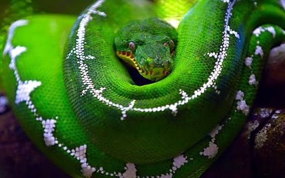
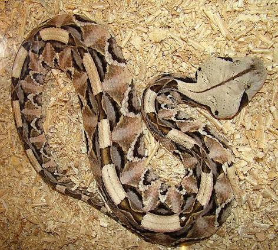
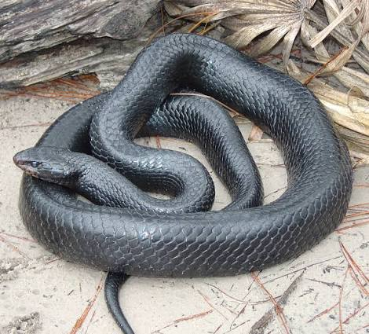
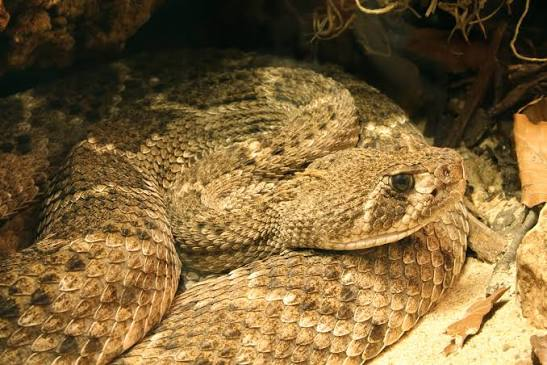
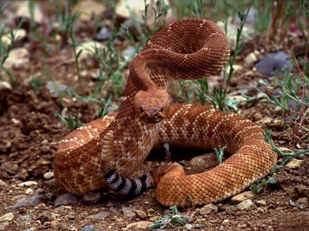
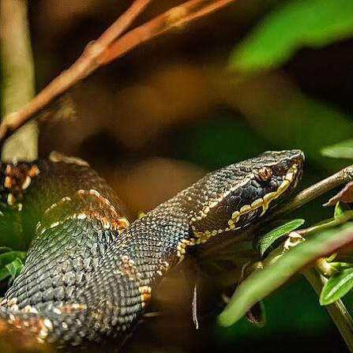

The Emerald Tree Boa is a striking green, arboreal snake from the Amazon Basin known for its vivid coloration, heavy body, and specialized tree dwelling lifestyle.

The West African Gaboon viper is a large, heavily built, venomous ambush predator, identifiable by its horn like nasal scales and intricate leaf mimicking camouflage.

The Eastern Indigo Snake is a large, glossy blue black, nonvenomous snake native to the southeastern United States and is federally listed as Threatened due to habitat loss

The Western Diamondback Rattlesnake is a large, venomous pit viper native to the southwestern United States and northern Mexico, known for its distinctive diamond pattern and highly defensive behavior.

The Red Diamond Rattlesnake is a large, reddish-brown venomous pit viper typically known for its diamond-shaped dorsal blotches and black and white tail bands.

Taylor's cantil is a venomous pit viper native to northeastern Mexico, known in Spanish as metapil and sometimes called the ornate cantil.